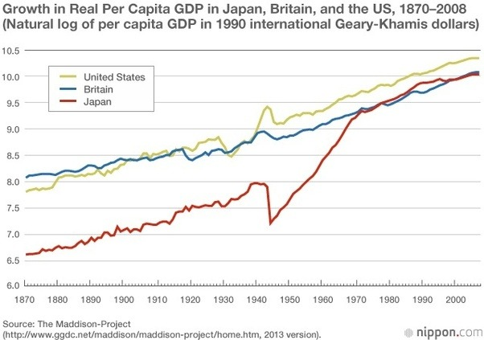
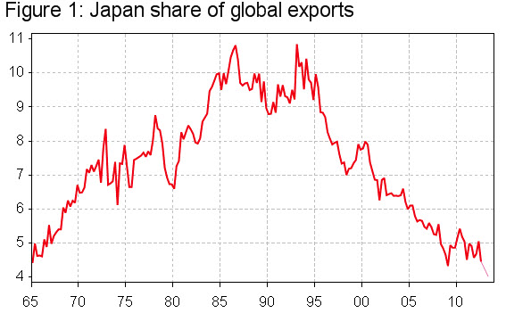
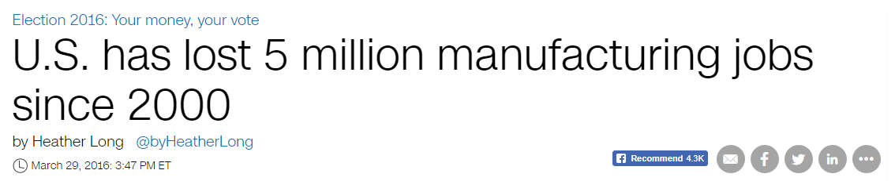
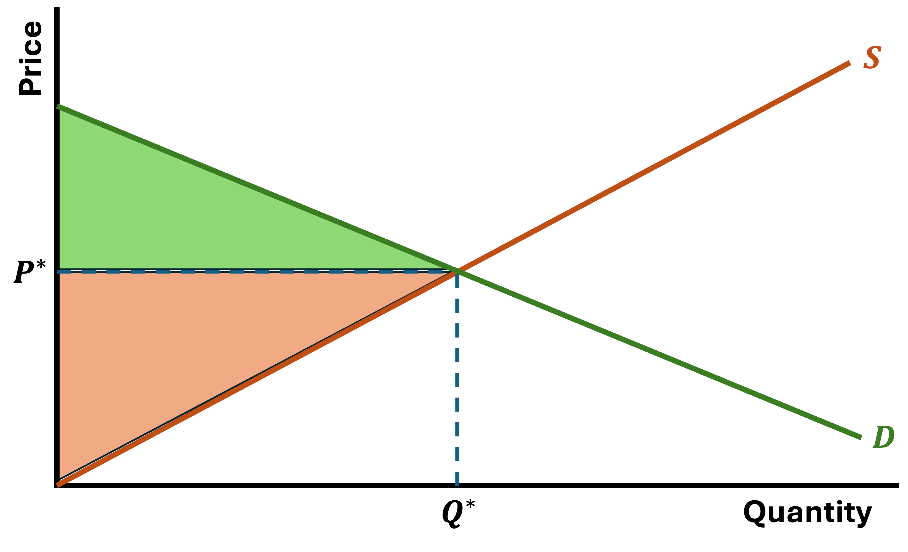
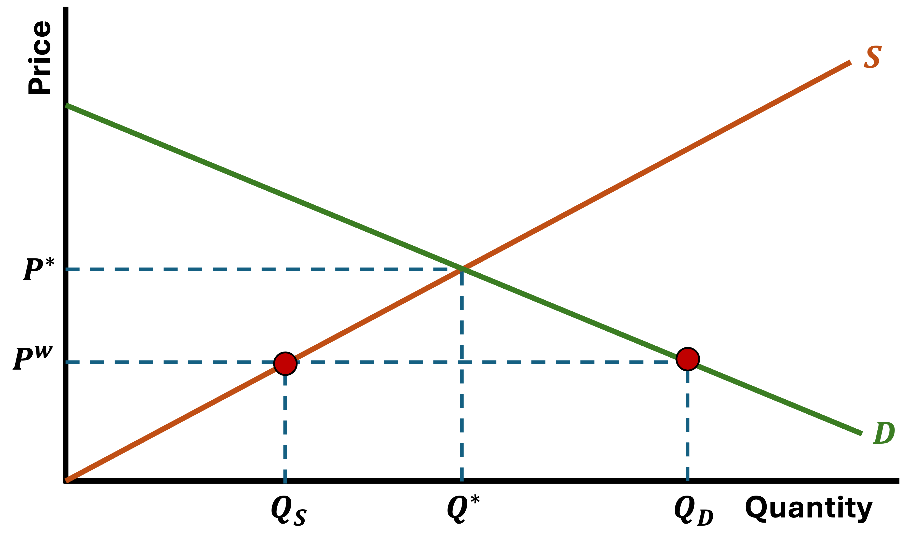
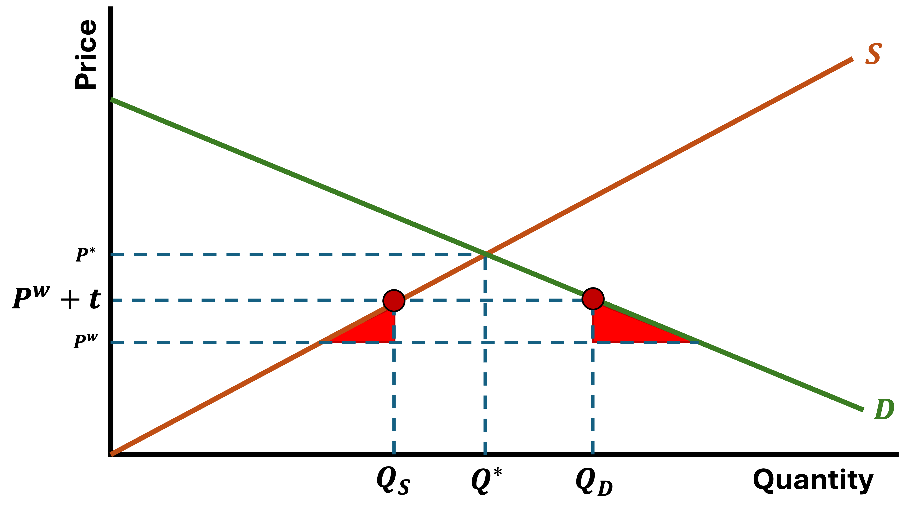

Then started exporting more advanced consumer goods: Electronics, vehicles, machines, etc.
Exports increased from 19 Billion USD in 1970 to 270 Billion USD in 1989
Case Study: Japan

Trade and Growth
More recently, China’s economy has grown substantially and many economists point to their emphasis on trade as a main cause
If we look at Japan’s share of global exports over time, the drop coincides with China’s entry into the world market

Trade and Growth
More recently, China’s economy has grown substantially and many economists point to their emphasis on trade as a main cause
Big question: If we have empirical evidence that trade can help grow an economy, why doesn’t everyone “trade their way out of poverty”?
They’re trying, but its not that easy

Trade and Growth
Trade and Growth
Winners and Losers
Economists like to argue that trade results in the most efficient allocation of production
Goods are produced where costs are lower
In general, this results in lower prices for consumers and increased welfare
However, benefits are not distributed equally across the population
If the US imports cars from Japan, what happens to US auto workers?
In theory, those that “lose” from trade could be compensated by those that “win”
In practice, that does not happen
Backlash From Trade
Recently (over the past few years) there has been a great deal of push back in developed countries against free trade and globalization
Globalization: The increasing integration of national economies into expanding international markets
This resistance to globalization comes from both political sides
The rise of populism across the globe has been partly attributed to this anti-globalization/anti-trade sentiment
Globalization
As with everything, there are Benefits and Costs
Benefits
Efficiency gains from trade
More rapid transfers of technology
Reduced probability of international wars
Increased demand for a countries products (exports)
Costs
Emphasizes inequalities across and within countries
Accelerates environmental degradation
International dominance of riches nations
All countries face these benefits AND costs, but the benefits are greater and the costs are higher for developing countries
In theory, the benefits outweigh the costs
Globalization and Trade
Trade liberalization has been key to the encouragement of globalization
Trade liberalization refers to the reduction of global tariffs
Tariff:A fixed-percentage tax on the value of an imported commodity levied at the point of entry into the importing country
Trade liberalization has occured through international agreements to lower the costs of trade between countries
It came into fashion after WWII, when European countries (and the US) signed the General Agreement on Tariffs and Trade (GATT)
European countries realized that by integrating their economies they could reduce the likelihood of another large-scale war on the continent
Free Trade and Growth
Free trade: The importation and exportation of goods without any barriers in the form of tariffs, quotas, or other restrictions
Much like free markets, free trade has many desirable properties
Also like free markets, free trade exists more in theory than in practice
Nevertheless, free trade is what we use as a basis for international trade in economics
Let’s set up a basic model of trade
Model of Trade
Motivation: Developed economies are better at producing most goods. Then wehy do we see countries trading?
Let’s use some simple assumptions:
Two countries
Two goods
One factor of production only require labor to produce any good
No transport costs
Our factor of production assumption implies that if we observe trade between two countries, it must be driven by differences in labor productivities across borders
Model of Trade
Let’s start with a single country for now and let’s assume there are two goods: Good Y and Good X
Production Possibility Frontiers (PPFs) show all the possible combinations (bundles) of goods that a country can produce
A country’s budget line
Model of Trade
Let’s put numbers to the model
If the country only produces cars, they can produce 20 cars
If the country only produces wheat, they can produce 80 units
Model of Trade
The slope of the PPF tells us the opportunity cost of producing them
In order to produce 80 wheat, the country must give up 20 cars
This means that the opportunity cost of producing 1 car is 4 units of wheat
Opportunity Cost
\[
80W = 20C \rightarrow \dfrac{80}{20}W = C
\]
\[
4W = 1C
\]
Two Countries, Two Goods
Let’s add a second country
They each can produce goods at the following rates (if they specialize):
A
B
Wheat
80
60
Cars
20
30
Two Countries, Two Goods
Let’s add a second country
They each can produce goods at the following rates (if they specialize):
A
B
Wheat
80
60
Cars
20
30
Opportunity Costs
Opportunity cost of producing 1 car in country A is 4 units of wheat
Opportunity cost of producing 1 car in country B is 2 units of wheat
It is “cheaper” to produce cars in country B
Lower opportunity cost = comparative advantage
Trade is based on comparative advantages
Specialization
Our model then predicts that country B will specialize in producing cars and country A will specialize in producing wheat
A and B will then trade with each other so they can both consume cars and wheat
Specialization in the good for which you have a comparatie advantage, then trading with another country should increase welfare for both trading partners
Since both countries specialize in the good that they produce relatively cheaper, the “international market price” will fall somewhere between the price in both countries
The international price will be higher than the exporting country’s price and lower than the importing country’s price
World Trade (Local Perspective)
How does this look like in terms of demand and supply in one country?
Let’s start under autarky (no trade)
World Trade (Local Perspective)
There’s Consumer and Producer Surplus

World Trade (Local Perspective)
Now we introduce trade, which comes with a World Price

World Trade (Local Perspective)
Because consumers demandmore thanlocal producers make, demand must be met somehow
The country imports the difference
World Trade (Local Perspective)
This new price shifts Consumer and Producer Surplus
World Trade (Government Intervention)
Let’s imagine that the government notices this loss in Producer Surplus and they decide they would like to protect their domestic industry somewhat
So they enact a tariff on the imported good
This will raise the price of the imported good
It will generate government revenue
It will reduce consumer surplus
It will increase domestic producer surplus
And it will induce some market inefficiencies (Deadweight Loss)
World Trade (Government Intervention)
Prices go up to \(P^{W} + t\) which produces new quantity demanded and supplied locally
World Trade (Government Intervention)
The Government collects tariff revenues\(= \text{Imports} \times \text{tariff}\)
World Trade (Government Intervention)
Consumer Surplus shrinks slightly and Producer Surplus grows
World Trade (Government Intervention)
The tariff (tax) creates inefficiencies (Deadweight Loss)

Developing Nations and Trade
There are two main strategies that developing countries have taken when faced with increased globalization
Import Substitution Industrialization
Development strategy to promote domestic production of imported goods through protectionism and state intervention
High tariffs
Subsidies for Domestic Industry
Goal is to break dependency on foreign commodities
Create domestic industrial capacity
Inefficient
Small domestic markets limited scale economies
Export Promotion
A strategy centered on integrating domestic firms into global markets, incentivizing production for export, and fostering competitiveness
Low or moderate tariffs toward gradual liberalization
Incentives for foreign direct investment
Learning-by-Exporting
Requires strong state capacity and credible institutions